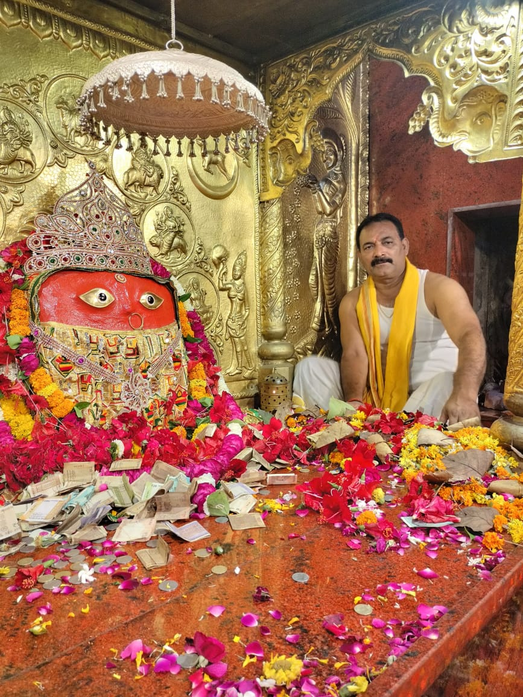

ABOUT TEMPLE
Chauharjan Devi Temple also known as Barahi Devi Temple is a Hindu (Sanatan Religion) temple of mother goddess Barahi or Chauharjan Devi, located in village Chauharjan Parasrampur in Pratapgarh, Uttar Pradesh. The temple is located on the holy bank of river Sai. It is one of the oldest temple of maa varahi . It holds a yearly fair of maa varahi where people from all across come and visit the temple for blessings and prosperity .